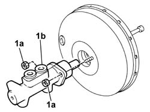

3330D10 brake servo - r+r - includes separation from master cylinder (pump)
- Path
- Procedures > 33 BRAKES > 3330 HYDRAULIC BRAKE SYSTEM > 3330D brake vacuum system > 3330D10 brake servo - r+r - includes separation from master cylinder (pump)
- Kind
- repair procedure (removal / refitting; the operation number is the code)
- Applies to
- all engines; all production periods
- Interactive page
- https://sloeber94.github.io/elrnDB-fDbl/en/#/2584667
Applies to: all engines; all production periods
 Removing
Removing
 Refitting
RefittingOpen the bonnet.
Op. 5530B52 BATTERY SUPPORT/DRIP TRAY - R.R..
Op. 3330C40 BRAKE FLUID RESERVOIR CAP - R + R.
Op. 3330C30 BRAKE FLUID RESERVOIR - R + R AND WASH INSIDE.
Op. 3330D02 BRAKE SERVO/BRAKE PUMP ASSEMBLY - R.R..
1. Undo nuts (1a) securing master cylinder (1b) to the brake servo and remove.

Applies to: all engines; all production periods
Refitting
RemovingPosition the master cylinder on the brake servo and secure by means of the retaining nuts.
 | Fastening | Component | Ø | Value (daNm) |
|---|---|---|---|---|
- | Nut | BRAKE MASTER CYLINDER (PUMP) | - | 2.5 ± 0.4 |
Op. 3330D02 BRAKE SERVO/BRAKE PUMP ASSEMBLY - R.R..
Op. 3330C30 BRAKE FLUID RESERVOIR - R + R AND WASH INSIDE.
Op. 5530B52 BATTERY SUPPORT/DRIP TRAY - R.R..
Op. 0010T64 BRAKE AND/OR CLUTCH FLUID CHECK LEVEL AND TOP UP AS NECESSARY.
Op. 0010T65 HYDRAULIC BRAKE SYSTEM - BLEED AIR.
Op. 3330C40 BRAKE FLUID RESERVOIR CAP - R + R.
Close the bonnet lid.
Topics linked from this page (7)
- 0010T64 brake and or clutch fluid check level and top up as necessary
- 0010T65 hydraulic brake system bleed air
- 3330C30 brake fluid reservoir - r + r and wash inside
- 3330C40 brake fluid reservoir plug - r + r
- 3330D02 brake servo/brake pump assembly - r r
- 5530B10 battery - r+r
- 5530B52 Battery DRIP TRAY/SUPPORT - R.R.